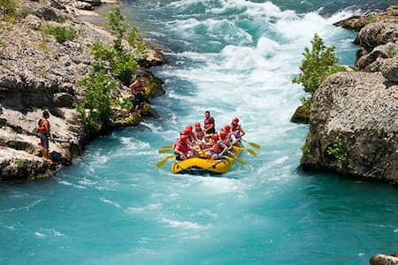
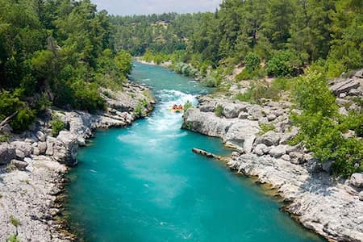
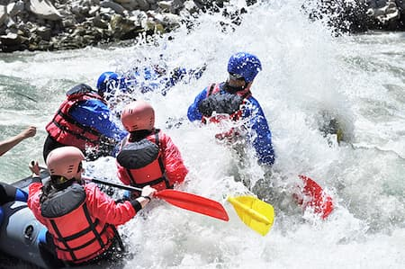

White Water Rafting
At White Water Rafting, we believe that the river has a unique story to tell every person who enters its flow. Our mission is to bridge the gap between human curiosity and the raw, untamed beauty of the natural world. Whether you are seeking a meditative float through ancient limestone canyons or a pulse-pounding battle against Class V rapids, our expert guides are here to ensure your journey is safe, educational, and utterly unforgettable. Come join us.

History
Founded in 1995, our journey began with a single, secondhand raft and a group of friends who shared a passion for the power of the river. We spent our summers learning every eddy and whirlpool, building a deep respect for the water that remains our guiding principle today. What started as a hobby transformed into a mission to share the thrill of the outdoors with adventurers from all walks of life.

Over the last three decades, we have evolved into a premier adventure destination, serving over 10,000 guests annually. Despite our growth, our core values of conservation and safety haven't wavered. We have invested heavily in state-of-the-art equipment and training programs to ensure every guest feels secure. Our history is written in every splash and every smile on the water, and we look forward to many more years.
Adventure Awaits You



